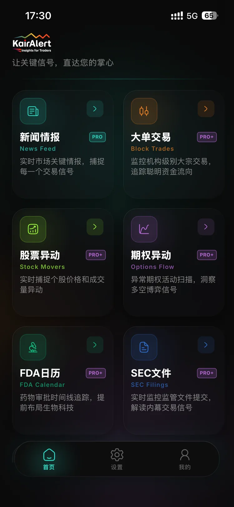
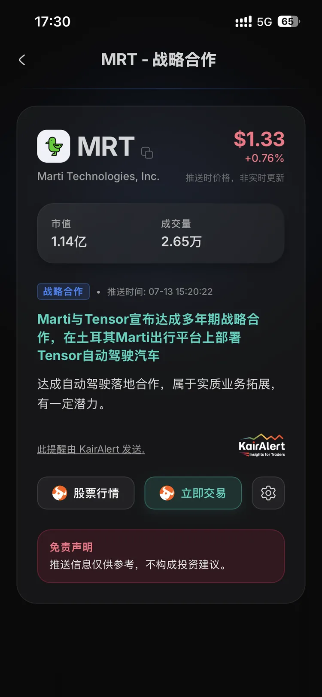
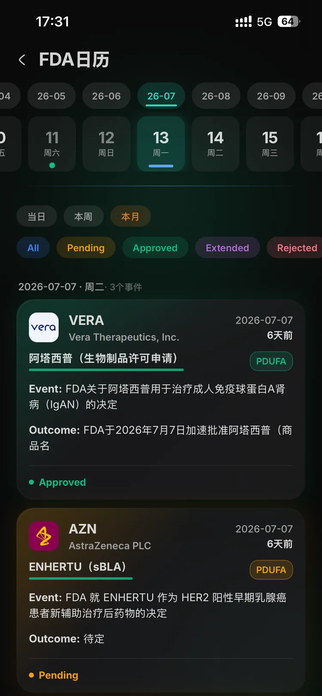
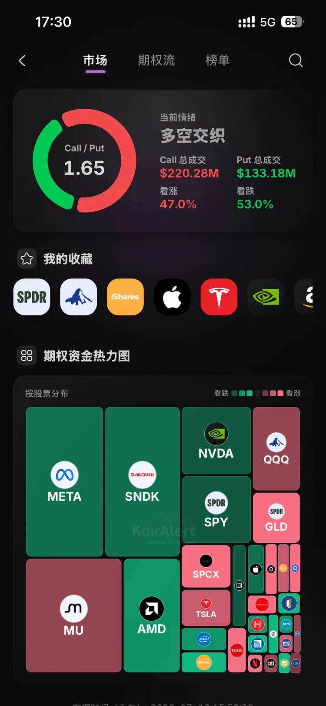
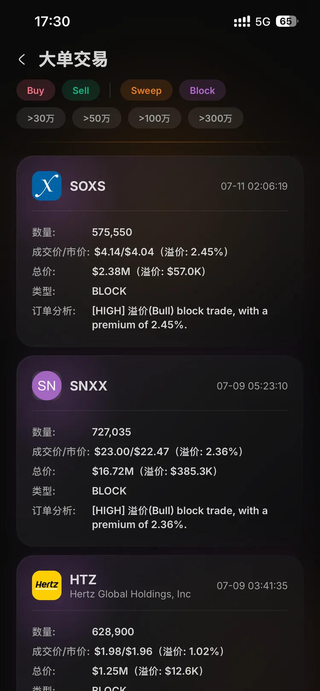
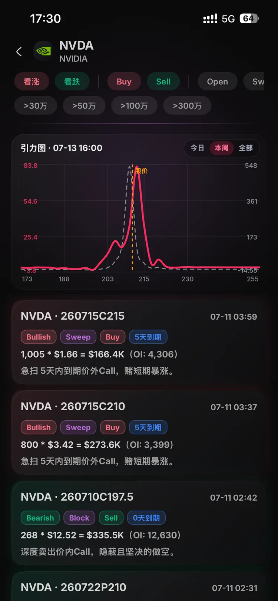

实时美股小盘股提醒：
8 类信号 + 引力流 + 量化实验室
别再被噪音拖慢交易。KairAlert 每日扫描 20,000+ 信息源，并实时推送可能影响股价的催化剂信号，覆盖 FDA、并购、融资、合同/订单、合作、SEC 文件、期权异动和大宗交易。同时通过引力流和量化实验室提供数据驱动的研究和交易洞察。






覆盖关键市场催化剂的
实时提醒
一个信息流，覆盖八类高价值信号。把注意力放在真正可能推动小盘股和中盘股波动的事件上。
FDA 批准与临床结果
第一时间跟踪 PDUFA 决定、临床数据读出和监管更新。
并购与收购
实时捕捉最终协议、要约收购和收购相关头条。
融资与资本募集
监控增发、私募、债务融资等可能影响价格走势的融资事件。
合同与订单
发现合同中标和重大订单，尤其是交易规模可能显著影响估值的事件。
合作与协作
接收战略合作、授权协议和商业协作公告提醒。
SEC 文件
跟踪 8-K、S-3 等文件驱动的催化剂，不需要手动翻 EDGAR。
期权异动
跟踪异常期权活动，识别仓位变化和潜在动量机会。
大宗交易
识别重要大单成交和大额盘口活动，辅助判断机构资金意图。
GravityFlow 引力流
看清价格真正愿意围绕哪里运动
引力流是 KairAlert 非常重视的核心量化功能，主要面向 SPY、QQQ、IWM 等头部 ETF，以及 NVDA、AAPL、TSLA、AMD、MU、INTC 等正股和期权都活跃的大盘股。
它不是预测涨跌，也不是传统支撑阻力。
引力流更像一张盘中的价格引力地图：哪些区域更容易被市场反复验证，哪些位置靠近后容易停留、争夺，哪些位置一旦离开后可能释放更大的波动。
在日内交易里，它可以帮助你判断当前是一个核心位置反复被承认，还是上下都有牵引的拉扯盘。到了尾盘，它也可以观察价格是否逐渐向某个小区间收敛。
在周度观察里，我们会把指数 ETF、核心权重股、半导体链、避险资产和波动相关标的放在一起看，判断市场是偏强、偏弱，还是处在高位拉扯。
个股与 ETF 引力图
观察 SPY、QQQ、IWM、NVDA 等活跃标的的关键价格区，识别单核心、拉扯盘和尾盘吸附。
周度市场结构
通过市场总览横向比较不同资产组，看指数、权重、板块和波动端是否形成一致方向。
交易前的位置感
先知道今天真正值得盯住的位置在哪里，再结合自己的仓位、策略和风险承受能力做判断。


走进 量化实验室
除了实时提醒，量化实验室是我们面向活跃交易者发布数据研究和实战框架的研究中心。
量化实验室是我们的研究中心。
我们会发布大数据研究、市场微观结构观察，以及围绕实际交易决策的量化工作流笔记。
内容包括催化剂行为分析、信号质量复盘、执行层面的思考，以及内部工具沉淀出的技术总结。
如何开始使用
只有 Android 和 iOS 支持实时系统横幅通知。PC 端仅适合浏览，不支持系统级 push banner 提醒。
请切换到手机端
桌面端仅用于浏览。请切换到 Android 或 iOS 使用 KairAlert。
简单、透明的价格
没有隐藏费用。KairAlert 面向认真捕捉下一次突破机会的交易者，把预算投入到真正的信息优势上。
- ✓ 云端数据同步
- ✓ 新闻提醒
- ✓ 异动股票
- ✓ 量化实验室
- × 大宗交易
- × 期权异动
- × FDA 日历
- × SEC 文件
- × 优先提醒
- × 所有未来功能
- ✓ 云端数据同步
- ✓ 新闻提醒
- ✓ 异动股票
- ✓ 量化实验室
- ✓ 大宗交易
- ✓ 期权异动
- ✓ FDA 日历
- ✓ SEC 文件
- ✓ 优先提醒
- ✓ 所有未来功能
准备订阅？请通过 support@kairalert.pro 或 Discord 联系我们开始使用。
由交易者发起，
由工程师打磨。
我们受够了昂贵又嘈杂的新闻源。KairAlert 只专注一件事：过滤噪音，找到真正可交易的催化剂。
我们曾经被噪音淹没。
作为全职日内交易者，我们曾经为“高级”新闻源和 squawk box 花费数千美元，最后发现一个很痛的事实： 99% 的突发新闻都没有交易价值。等我们手动从噪音里筛出一个真正可交易的 FDA 催化剂时，行情往往已经走完。
所以我们决定停止抱怨，开始写代码。凭借工程背景，我们把 KairAlert 做成了一套内部工具，核心执念只有一个： 过滤。
“KairAlert 不只是我们卖的产品。我们自己也用它交易自己的账户。我们做它，是因为我们真的需要它。”
我们的专有 AI 引擎 7x24 小时监控大量数据源，包括：
- SEC 文件：直接跟踪 SEC EDGAR 数据源，包括 8-K、S-3、Form 4。
- FDA 日历与事件：跟踪 PDUFA 日期、临床试验结果和审批动态。
- 新闻稿线路：实时扫描主流新闻稿发布渠道，捕捉突发公告。
常见问题
了解 KairAlert 如何工作、数据来源是什么，以及它如何帮助你更高效地捕捉美股小盘股信息。
KairAlert 覆盖哪些信号和量化工具？
引力流适合看哪些标的？
交易美股小盘股时，KairAlert 适合解决什么问题？
如何更早发现 FDA 相关股票异动？
注意：FDA 事件交易风险很高，结果具有二元性，可能造成股价快速下跌。
KairAlert 和传统新闻网站有什么不同？
大多数传统新闻网站关注的是“新闻本身”。它们在分类、核心摘要、股票匹配和过滤上较弱，也很难把真正有价值的消息精准推送给用户。
使用传统新闻网站或券商 App 时，用户通常需要主动拉取某只股票或整个市场的全部新闻，再手动分类和筛选。面对成千上万家上市公司，要快速主动找到关键的一手信息几乎不现实。
KairAlert 做的是相反的事情：尽可能多地接入新闻，匹配到对应 ticker，再由算法判断是否值得提醒。如果被判定为高价值信息，就被动推送给用户。对交易者来说，这意味着你收到的是预先过滤过的高价值消息，可以显著节省时间，提高捕捉关键信息的效率。
KairAlert 每天会推送多少条提醒？
KairAlert 适合什么交易风格？
KairAlert 面向新闻、资金流和盘面结构变化带来的短线波动，尤其适合超短线、快进快出的交易场景，很多交易可能在几分钟内完成。
实时提醒主要关注小盘股（市值低于 10 亿美元），覆盖 FDA、并购、融资、合同/订单、合作、SEC 文件、期权异动和大宗交易八类实时信号；引力流则主要面向头部 ETF 和活跃大盘股，用来观察关键价格区和市场结构。
免责声明：KairAlert 是新闻聚合和过滤工具，其信息流中的任何内容都不构成投资建议。超短线交易风险极高，请基于自己的判断做决策。
如何联系你们？
你可以通过以下方式联系我们：
- Email: support@kairalert.pro
- Twitter: @zdying2024
- Discord: 加入社区